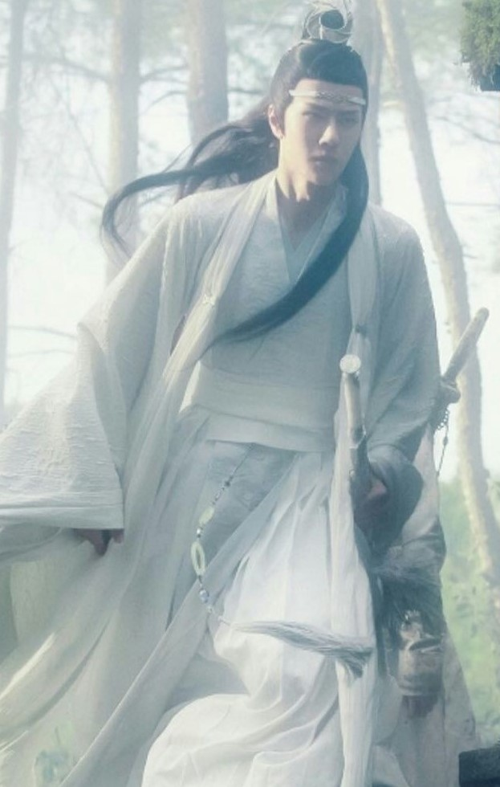
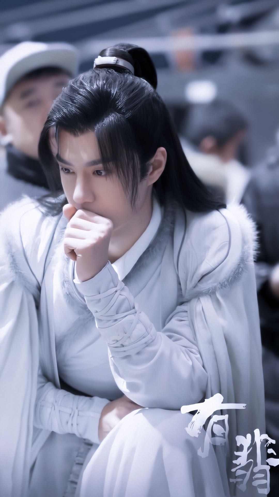
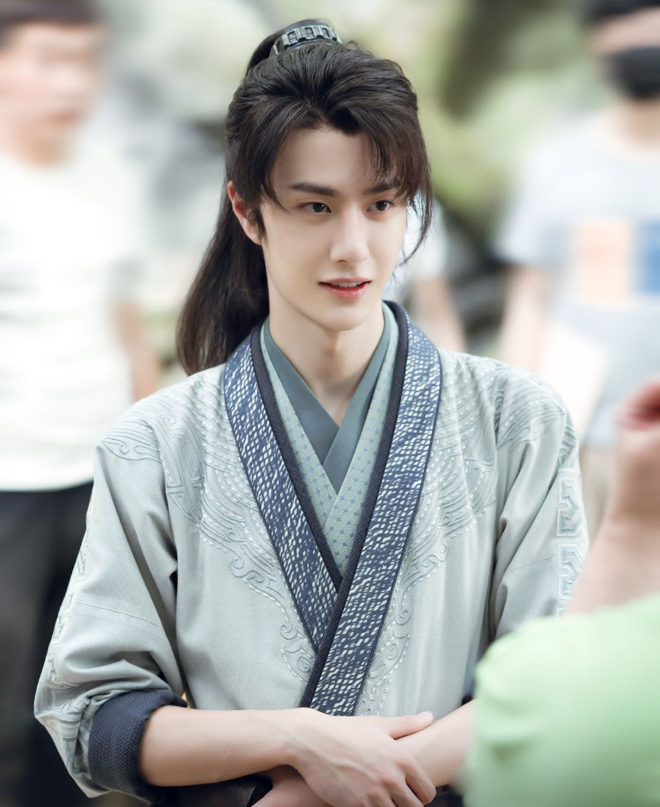
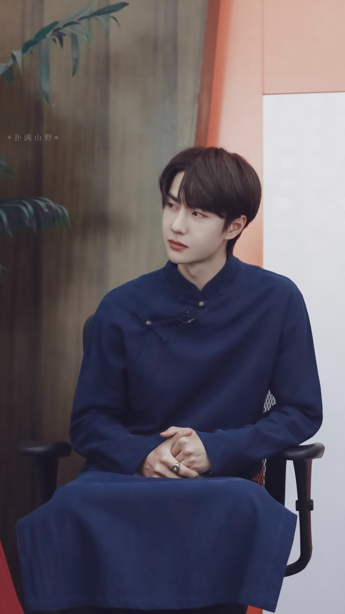
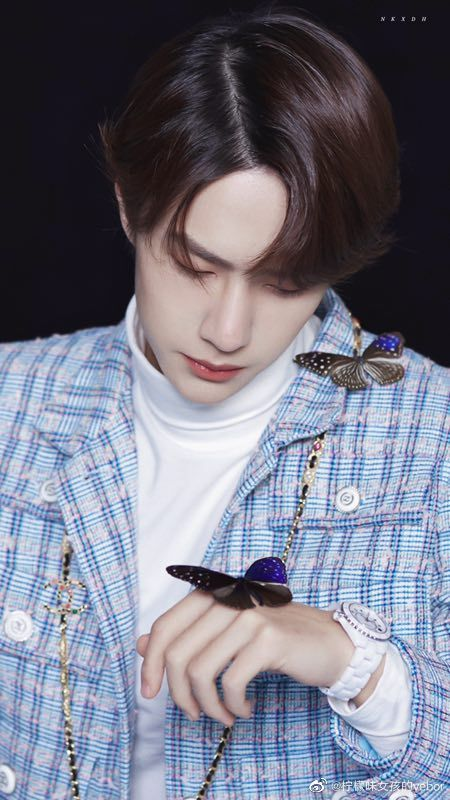
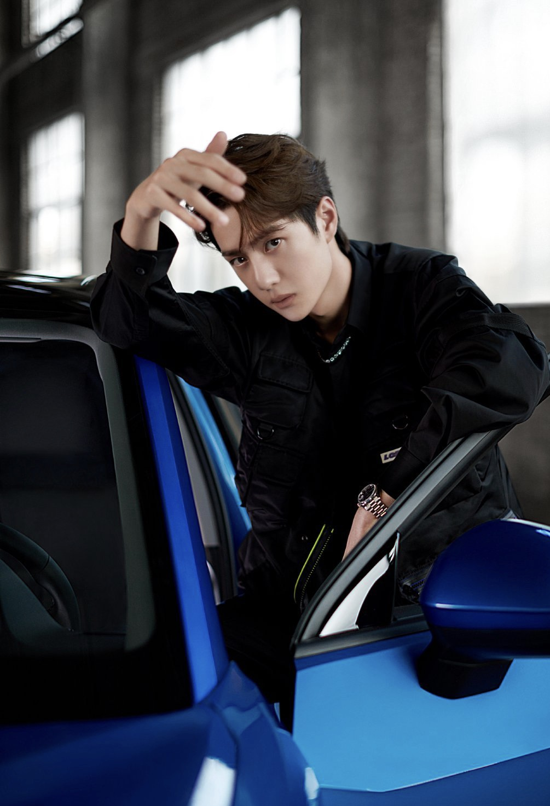
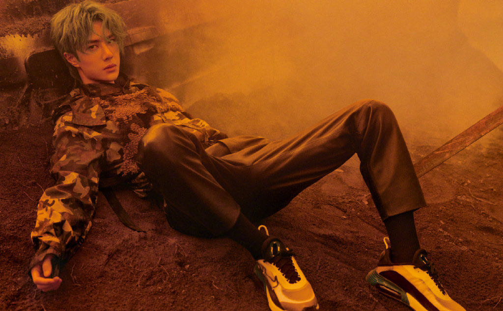
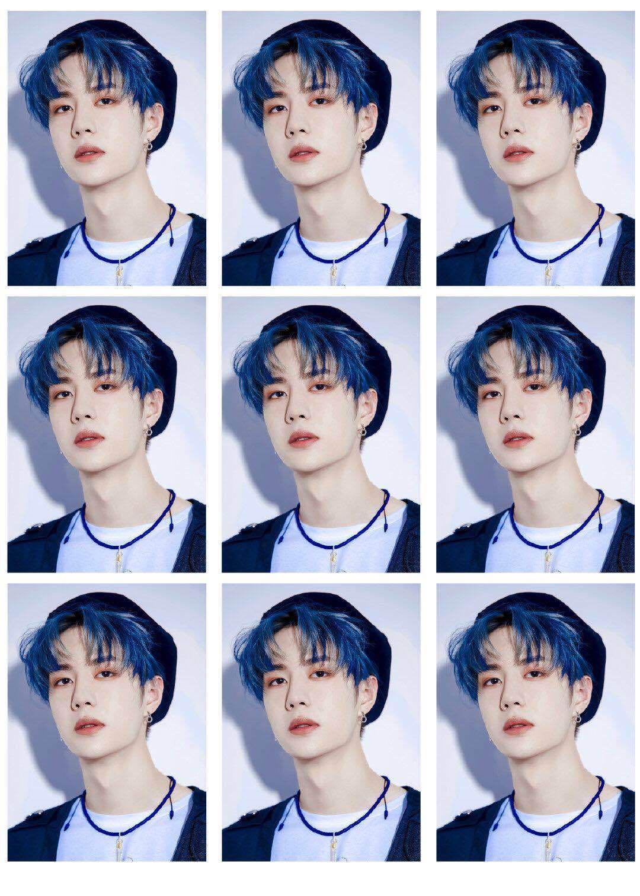
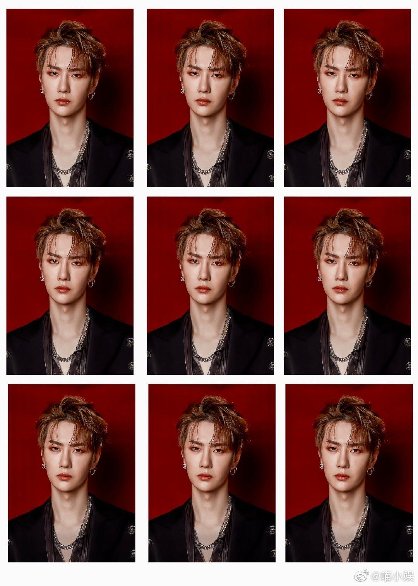
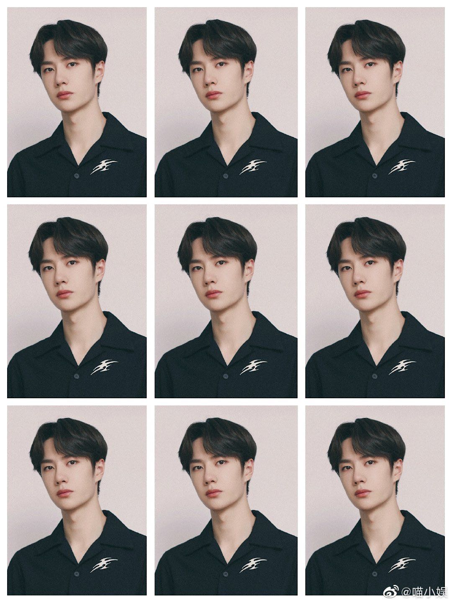

HKW的王一博
王一博（朝鲜语：왕일박 Wang Il Bak，英语：Wang Yi
Bo，1997年8月5日－），艺名一博（朝鲜语：이보 I Bo，英语：Yi
Bo），出生于河南洛阳，中国大陆男歌手、舞者、演员，湖南卫视《天天向上》节目主持人，同时，王一博也是一名职业摩托车车手，为中国万里达雅马哈车队（MLT
YAMAHA）的签约车手，号码85。昵称：王甜甜、耶啵、酷盖、白牡丹。
重要事件
- 2014年10月16日，以五人男子团体UNIQ出道，为团内主领舞、领Rapper，亦是团体中的忙内。2016年4月29日，正式成为湖南卫视综艺节目《天天向上》主持团天天兄弟的成员之一。
- 2019年在ARRC亚锦赛中国珠海站中获得D组新秀组冠军、混合组亚军的成绩。
- 2019年出演电视剧《陪你到世界之巅》、《陈情令》，在剧中饰演“季向空”与“蓝忘机”一角。
- 2019年8月，首次入选2019年福布斯中国名人榜并位列第71名。
音乐作品
| 2017年11月17日 | 《Just Dance》 |
| 2018年8月15日 | 《鲨影》 |
| 2018年10月20日 | 《年少心事》 |
| 2019年1月17日 | 《Fire》 |
| 2019年3月14日 | 《Lucky》 |
| 2019年6月11日 | 《最燃的冒险》 |
| 2019年6月19日 | 《说剑》 |
| 2019年6月27日 | 《无羁》 |
| 2019年7月22日 | 《不忘》 |
| 2019年12月30日 | 《无感》 |
| 2020年1月16日 | 《给妈咪》 |
| 2020年2月22日 | 《有你在身边》 |
| 2020年3月6日 | 《因为我们在一起》 |
影视作品
- 电影
| 2016年4月29日 | 《梦想合伙人》 | 饰演：赵书宇 |
| 2016年9月14日 | 《大话西游3》 | 饰演：红孩儿 |
| 待上映 | 《闭嘴！爱吧》 | 饰演：昌林 |
- 电视剧
| 2017 | 《人间至味是清欢》 | 饰演：翟至味 |
| 2017 | 《青春最好时》 | 饰演：林佳一 |
| 2019 | 《陪你到世界之巅》 | 饰演：季向空 |
| | 《陈情令》 | 饰演：蓝忘机 |
| 待播 |
| | 《超凡天赋》 | 饰演：蔚逸晨 |
| | 《私立蜀山学园》 | 饰演：滕净 |
| | 《有翡》 | 饰演：谢允 |
HKW的圈内男友










奖项
大型颁奖典礼奖项
| 年份 | 名称 | 奖项 |
|---|
| 2017年 | 第17届音乐风云榜年度盛典 | 偶像新势力奖 |
|---|
| 2017亚洲影响力盛典 | 亚洲影响力最佳新人演员奖 |
| 公益慈善活动2017中国榜样女性盛典 | 风尚慈善榜样奖 |
| 微博电视影响力盛典 | 年度新锐艺人奖 |
| 凤凰时尚之选颁奖盛典 | 网络票选最爱新晋演员奖 |
| 新浪时尚2017风尚大赏 | 年度新锐艺人奖 |
| 2019年 | 2019智族GQ年度人物盛典 | 年度突破演员奖 |
|---|
| 第26届华鼎奖 | 全国十佳观众最喜爱电视演员 |
| 2019体育星势力 | 跨界影响力奖 |
| 2019腾讯视频星光大赏 | 年度人气电视剧演员 |
| 2019年度偶像 |
| 2019年度VIP之星 |
| 2020年 | 2019微博之夜 | 微博年度热度人物 |
|---|
| | 微博年度男神 |
摩托车赛事类奖项
| 年份/日期 | 赛事名称 | 组别 | 名次 |
|---|
2019年8月10日
2019年8月11日 | 亚洲公路摩托车锦标赛ARRC-ZIC摩托车赛 | D组（新手组） | 2019年8月10日：小组冠军；混组季军
2019年8月11日：小组冠军；混组亚军 |